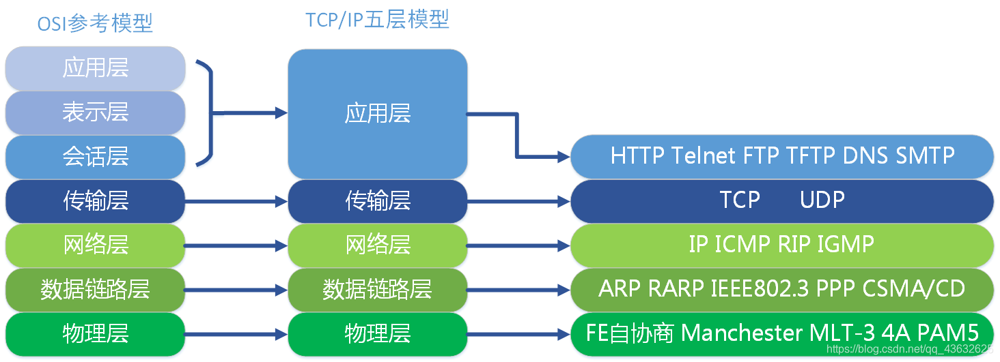
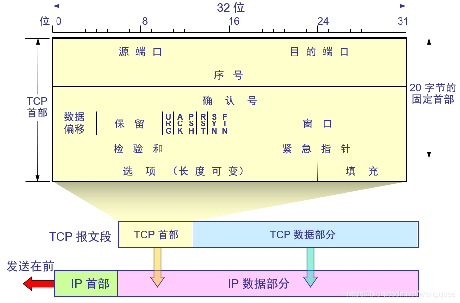
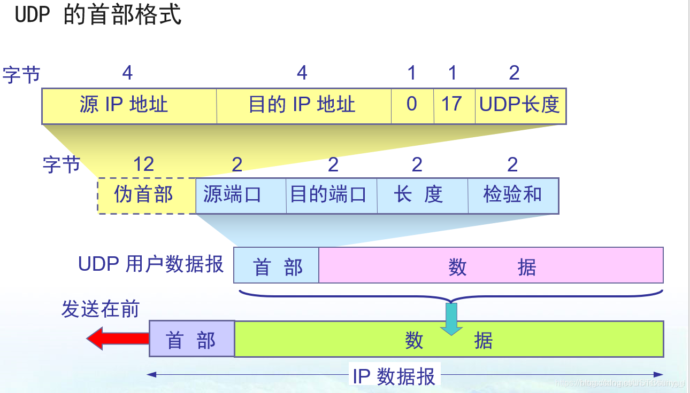

计算机网络五层模型

为了简化网络设计的复杂性，通信协议采用分层结构，各层之间既相互独立又相互协调工作，如此以来便达到的高效的目的。如同设计模式中对于设计一个复杂的程序时，尽量使程序各功能之间是解耦合的一样，对于复杂的网络设计，分层设计也是很明智的一种做法。
IP 协议（网际协议，Internet Protocol）
寻址（Addressing）
每台接入网络的设备都会被分配一个唯一的IP地址，作为它的"网络身份证"。
- IPv4：形如
192.168.1.1，32位地址，约43亿个。由于互联网设备爆发增长，IPv4地址早已枯竭，但是NAT（网络地址转换）给它续了命，让多台设备可以共享一个公网 IPv4 地址上网。 - IPv6：形如
2001:db8::1，128位地址，数量近乎无限，是未来趋势。
路由（Routing）
IP包从源到目的地通常要经过多个路由器。每个路由器根据目的IP地址查询路由表，决定下一跳往哪转，直到抵达目标网络。这就像快递经过多个分拣中心逐步逼近收件人。
但是IP层并不可靠，因为它不保证送达，不保证顺序，也不保证不重复，因此才需要TCP协议，也就是常说的"TCP/IP协议栈"。
其他
全球IP地址由国际互联网号码分配机构（IANA，Internet Assigned Numbers Authority）统一管理，并通过区域性互联网注册管理机构（RIR）分配给运营商和组织，再由这些机构分配给个人或企业使用。
TCP 协议（传输控制协议，Transmission Control Protocol）
TCP是面向连接的传输层协议，通过三次握手建立可靠连接，确保数据按序、无差错传输。它支持信息分段、重组、错误检测和重传。TCP用于需要高可靠性的场景，如HTTP/HTTPS、FTP和SMTP。网页加载、档案下载等都依赖TCP。
三次握手：建立连接
分别站在客户端和服务端的角度，确认连接无非就是确认两件事：我能收到对方的消息；对方能收到我的消息。
客户端 服务器
|---- 1. SYN -----------> | 客户端：我想建立连接，我的seq=x。此时服务端确认了自己的接收能力。
|<--- 2. SYN + ACK ----- | 服务器：收到！seq=y，ack=x+1。客户端收到消息后确认了自己的收发能力。
|---- 3. ACK -----------> | 客户端：收到你的确认，ack=y+1。此时服务端确认了自己的发送能力。
|====== 连接建立完成 ======|
TCP 报文段格式
TCP 将数据封装成"报文段"传输，核心字段如下：
- 序列号（seq）：本报文段首个字节的序号，用于排序和去重
- 确认号（ack）：期望收到的下一个字节的序号（捎带确认机制）
- 窗口大小：告诉对方"我还能接收多少字节"（流量控制）
- 标志位：SYN（建连）、ACK（确认）、FIN（关连）、RST（重置）、PSH（立即推送）、URG（紧急）
真实报文是"嵌套"在更外层协议里的：
以太网帧头(14字节) │ IP头(通常20字节) │ TCP头(20-60字节) │ 应用数据
TCP 首部的标准结构（RFC 9293 定义）：源端口(16位)、目的端口(16位)、序列号(32位)、确认号(32位)、数据偏移(4位)、保留(4位)、控制位(8位: CWR/ECE/URG/ACK/PSH/RST/SYN/FIN)、窗口(16位)、校验和(16位)、紧急指针(16位)。
这是一个真实 SYN+ACK 报文的十六进制（已经剥掉前面的以太网头和 IP 头，从 TCP 头开始）：
02 2a e2 3f 47 05 60 6a d0 42 0d b4 80 18 ff ff 4b 3b 00 00 ...
│───┬───│───┬───│──────┬──────│──────┬──────│───┬───│───┬───│───┬───│───┬───│
源端口 目的端口 序列号 确认号 控制位+偏移 窗口 校验 紧急指针
源端口 02 2a → 十进制 554（RTSP 服务）
目的端口 e2 3f → 十进制 57919（客户端临时端口）
序列号 47 05 60 6a → 十进制 1191534698（服务端初始序列号 ISN）
确认号 d0 42 0d b4 → 十进制 3493989812（确认客户端的 SYN）
数据偏移+控制位 80 18 → 1000 0000 0001 1000，前 4 位 1000=8，即首部长度 8×4=32 字节（说明带了 12 字节选项）；控制位里 ACK=1, SYN=1（这就是第二次握手）
窗口 ff ff → 65535
校验和 4b 3b
紧急指针 00 00
后面 12 字节是选项（MSS、窗口缩放、SACK 许可等）
数据部分为空（握手报文不带应用数据）

四次挥手：关闭连接
TCP 是全双工(能同时收、发)的，因此关闭连接时每个方向都必须单独关闭——这就是需要"四次"的原因。
客户端 服务器
|---- 1. FIN --------------------> | 客户端：我没数据要发了，准备关闭
|<--- 2. ACK -------------------- | 服务器：收到你的 FIN
| （服务器继续发送剩余数据） |
|<--- 3. FIN -------------------- | 服务器：我也没数据要发了
|---- 4. ACK --------------------> | 客户端：收到，连接关闭
| 客户端进入 TIME_WAIT，等待 2MSL |
MSL（Maximum Segment Lifetime）= 报文段在网络中最大生存时间
2MSL 的意义：确保最后一个 ACK 能到达服务器——若丢失，服务器会重发 FIN，客户端在 2MSL 内还能回应确保本次连接的所有旧报文都已从网络中消失，防止这些旧报文干扰后续新建的（使用相同端口对的）连接
实践尝试
想直观看到自己机器(Linux)上的真实 TCP 报文可以通过以下方法：
# 终端1：开启抓包
sudo tcpdump -i lo -X port 8080
# 终端2：发起一个本地服务
python -m http.server 8080
# 终端3：发一个 HTTP 请求
curl http://localhost:8080
可以看到抓包的全过程
tcpdump: verbose output suppressed, use -v[v]... for full protocol decode
listening on lo, link-type EN10MB (Ethernet), snapshot length 262144 bytes
# 这里系统先尝试解析 localhost 的 IPv6 地址，算是第一次握手
04:11:19.048558 IP6 localhost.33254 > localhost.http-alt: Flags [S], seq 51546928, win 65476, options [mss 65476,sackOK,TS val 2062165144 ecr 0,nop,wscale 8], length 0
0x0000: 6009 c7c7 0028 0640 0000 0000 0000 0000 `....(.@........
0x0010: 0000 0000 0000 0001 0000 0000 0000 0000 ................
0x0020: 0000 0000 0000 0001 81e6 1f90 0312 8b30 ...............0
0x0030: 0000 0000 a002 ffc4 0030 0000 0204 ffc4 .........0......
0x0040: 0402 080a 7aea 2498 0000 0000 0103 0308 ....z.$.........
# Flags [R.] 中 R=1, ACK=1，表示"重置连接"（RST），连接失败。这是因为 IPv6 上没有服务在监听。
04:11:19.048564 IP6 localhost.http-alt > localhost.33254: Flags [R.], seq 0, ack 51546929, win 0, length 0
0x0000: 600b bef9 0014 0640 0000 0000 0000 0000 `......@........
0x0010: 0000 0000 0000 0001 0000 0000 0000 0000 ................
0x0020: 0000 0000 0000 0001 1f90 81e6 0000 0000 ................
0x0030: 0312 8b31 5014 0000 001c 0000 ...1P.......
# 系统解析 IPv4 地址 TCP 三次握手开始，注意观察 seq 和 ack
04:11:19.048599 IP localhost.57906 > localhost.http-alt: Flags [S], seq 707265951, win 65495, options [mss 65495,sackOK,TS val 4145266851 ecr 0,nop,wscale 8], length 0
0x0000: 4500 003c 676f 4000 4006 d54a 7f00 0001 E.. localhost.57906: Flags [S.], seq 2461168814, ack 707265952, win 65483, options [mss 65495,sackOK,TS val 4145266851 ecr 4145266851,nop,wscale 8], length 0
0x0000: 4500 003c 0000 4000 4006 3cba 7f00 0001 E..<..@.@.<.....
0x0010: 7f00 0001 1f90 e232 92b2 74ae 2a28 05a0 .......2..t.*(..
0x0020: a012 ffcb fe30 0000 0204 ffd7 0402 080a .....0..........
0x0030: f713 c0a3 f713 c0a3 0103 0308 ............
# 客户端回应
04:11:19.048622 IP localhost.57906 > localhost.http-alt: Flags [.], ack 1, win 256, options [nop,nop,TS val 4145266851 ecr 4145266851], length 0
0x0000: 4500 0034 6770 4000 4006 d551 7f00 0001 E..4gp@.@..Q....
0x0010: 7f00 0001 e232 1f90 2a28 05a0 92b2 74af .....2..*(....t.
0x0020: 8010 0100 fe28 0000 0101 080a f713 c0a3 .....(..........
0x0030: f713 c0a3 ....
# 连接确立，客户端向服务端请求数据，使用的是 HTTP 里的 GET 请求
# 注意这里的 TCP 首部只有 32 字节（因为选项只有 12 字节的 Timestamp），不像 SYN 包那样有 40 字节。
04:11:19.048659 IP localhost.57906 > localhost.http-alt: Flags [P.], seq 1:79, ack 1, win 256, options [nop,nop,TS val 4145266851 ecr 4145266851], length 78: HTTP: GET / HTTP/1.1
0x0000: 4500 0082 6771 4000 4006 d502 7f00 0001 E...gq@.@.......
0x0010: 7f00 0001 e232 1f90 2a28 05a0 92b2 74af .....2..*(....t.
0x0020: 8018 0100 fe76 0000 0101 080a f713 c0a3 .....v..........
# 从 0x30 行开始就是纯粹的 HTTP 应用数据，直接裸接在 TCP 头后面
0x0030: f713 c0a3 4745 5420 2f20 4854 5450 2f31 ....GET./.HTTP/1
0x0040: 2e31 0d0a 486f 7374 3a20 6c6f 6361 6c68 .1..Host:.localh
0x0050: 6f73 743a 3830 3830 0d0a 5573 6572 2d41 ost:8080..User-A
0x0060: 6765 6e74 3a20 6375 726c 2f38 2e31 392e gent:.curl/8.19.
0x0070: 300d 0a41 6363 6570 743a 202a 2f2a 0d0a 0..Accept:.*/*..
0x0080: 0d0a ..
04:11:19.048662 IP localhost.http-alt > localhost.57906: Flags [.], ack 79, win 256, options [nop,nop,TS val 4145266851 ecr 4145266851], length 0
0x0000: 4500 0034 af77 4000 4006 8d4a 7f00 0001 E..4.w@.@..J....
0x0010: 7f00 0001 1f90 e232 92b2 74af 2a28 05ee .......2..t.*(..
0x0020: 8010 0100 fe28 0000 0101 080a f713 c0a3 .....(..........
0x0030: f713 c0a3 ....
04:11:19.049400 IP localhost.http-alt > localhost.57906: Flags [P.], seq 1:156, ack 79, win 256, options [nop,nop,TS val 4145266852 ecr 4145266851], length 155: HTTP: HTTP/1.0 200 OK
0x0000: 4500 00cf af78 4000 4006 8cae 7f00 0001 E....x@.@.......
0x0010: 7f00 0001 1f90 e232 92b2 74af 2a28 05ee .......2..t.*(..
0x0020: 8018 0100 fec3 0000 0101 080a f713 c0a4 ................
0x0030: f713 c0a3 4854 5450 2f31 2e30 2032 3030 ....HTTP/1.0.200
0x0040: 204f 4b0d 0a53 6572 7665 723a 2053 696d .OK..Server:.Sim
0x0050: 706c 6548 5454 502f 302e 3620 5079 7468 pleHTTP/0.6.Pyth
0x0060: 6f6e 2f33 2e31 332e 390d 0a44 6174 653a on/3.13.9..Date:
0x0070: 2054 7565 2c20 3034 2041 7567 2032 3032 .Tue,.04.Aug.202
0x0080: 3620 3038 3a31 313a 3139 2047 4d54 0d0a 6.08:11:19.GMT..
0x0090: 436f 6e74 656e 742d 7479 7065 3a20 7465 Content-type:.te
0x00a0: 7874 2f68 746d 6c3b 2063 6861 7273 6574 xt/html;.charset
0x00b0: 3d75 7466 2d38 0d0a 436f 6e74 656e 742d =utf-8..Content-
0x00c0: 4c65 6e67 7468 3a20 3138 370d 0a0d 0a Length:.187....
04:11:19.049406 IP localhost.57906 > localhost.http-alt: Flags [.], ack 156, win 256, options [nop,nop,TS val 4145266852 ecr 4145266852], length 0
0x0000: 4500 0034 6772 4000 4006 d54f 7f00 0001 E..4gr@.@..O....
0x0010: 7f00 0001 e232 1f90 2a28 05ee 92b2 754a .....2..*(....uJ
0x0020: 8010 0100 fe28 0000 0101 080a f713 c0a4 .....(..........
0x0030: f713 c0a4 ....
04:11:19.049417 IP localhost.http-alt > localhost.57906: Flags [P.], seq 156:343, ack 79, win 256, options [nop,nop,TS val 4145266852 ecr 4145266852], length 187: HTTP
0x0000: 4500 00ef af79 4000 4006 8c8d 7f00 0001 E....y@.@.......
0x0010: 7f00 0001 1f90 e232 92b2 754a 2a28 05ee .......2..uJ*(..
0x0020: 8018 0100 fee3 0000 0101 080a f713 c0a4 ................
0x0030: f713 c0a4 3c21 444f 4354 5950 4520 4854 ........Direct
0x0080: 6f72 7920 6c69 7374 696e 6720 666f 7220 ory.listing.for.
0x0090: 2f3c 2f74 6974 6c65 3e0a 3c2f 6865 6164 / ...Dir
0x00b0: 6563 746f 7279 206c 6973 7469 6e67 2066 ectory.listing.f
0x00c0: 6f72 202f 3c2f 6831 3e0a 3c68 723e 0a3c or./
.
.<
0x00d0: 756c 3e0a 3c2f 756c 3e0a 3c68 723e 0a3c ul>..
.<
0x00e0: 2f62 6f64 793e 0a3c 2f68 746d 6c3e 0a /body>..
# 四次挥手
04:11:19.049419 IP localhost.57906 > localhost.http-alt: Flags [.], ack 343, win 256, options [nop,nop,TS val 4145266852 ecr 4145266852], length 0
0x0000: 4500 0034 6773 4000 4006 d54e 7f00 0001 E..4gs@.@..N....
0x0010: 7f00 0001 e232 1f90 2a28 05ee 92b2 7605 .....2..*(....v.
0x0020: 8010 0100 fe28 0000 0101 080a f713 c0a4 .....(..........
0x0030: f713 c0a4 ....
04:11:19.049437 IP localhost.http-alt > localhost.57906: Flags [F.], seq 343, ack 79, win 256, options [nop,nop,TS val 4145266852 ecr 4145266852], length 0
0x0000: 4500 0034 af7a 4000 4006 8d47 7f00 0001 E..4.z@.@..G....
0x0010: 7f00 0001 1f90 e232 92b2 7605 2a28 05ee .......2..v.*(..
0x0020: 8011 0100 fe28 0000 0101 080a f713 c0a4 .....(..........
0x0030: f713 c0a4 ....
04:11:19.049532 IP localhost.57906 > localhost.http-alt: Flags [F.], seq 79, ack 344, win 256, options [nop,nop,TS val 4145266852 ecr 4145266852], length 0
0x0000: 4500 0034 6774 4000 4006 d54d 7f00 0001 E..4gt@.@..M....
0x0010: 7f00 0001 e232 1f90 2a28 05ee 92b2 7606 .....2..*(....v.
0x0020: 8011 0100 fe28 0000 0101 080a f713 c0a4 .....(..........
0x0030: f713 c0a4 ....
04:11:19.049543 IP localhost.http-alt > localhost.57906: Flags [.], ack 80, win 256, options [nop,nop,TS val 4145266852 ecr 4145266852], length 0
0x0000: 4500 0034 af7b 4000 4006 8d46 7f00 0001 E..4.{@.@..F....
0x0010: 7f00 0001 1f90 e232 92b2 7606 2a28 05ef .......2..v.*(..
0x0020: 8010 0100 fe28 0000 0101 080a f713 c0a4 .....(..........
0x0030: f713 c0a4 ....
可靠传输机制
IP 网络本身就是不可靠的——数据包可能丢失、乱序、重复、损坏。TCP 通过以下四大机制来"兜底"：
- 序列号与确认应答（ACK）
每个字节都有序号，接收方收到后回送 ACK 告知"我期待下一个字节是 N"。
- 超时重传（RTO）
发送方发出数据后会启动定时器，若在 RTO（Retransmission Timeout）内未收到 ACK，就重传该数据。RTO 是动态计算的，基于 RTT（往返时延）的平滑值及方差
- 滑动窗口（Sliding Window）
为了提高效率，TCP 允许连续发送多个报文段而无需逐个等待 ACK。
发送方视角：
[已发送且已确认][已发送待确认][可发送但未发送][不可发送]
↑ ↑
窗口内 窗口右沿
接收方通过 ACK 报文中的"窗口大小"字段告诉发送方："我目前的接收缓冲区还剩 X 字节"。发送方据此调整发送速率——这就是流量控制。
- 快速重传
当发送方连续收到 3 个相同的 ACK（即接收方反复说"我想要 N 号字节"），就推断 N 号字节丢失，不等超时立即重传——大幅降低丢包恢复延迟。
UDP 协议（用户数据报协议，User Datagram Protocol）
UDP直接发送数据报，无需建立连接，不提供重传或顺序保证。数据报具备简单的头部，减少开销。UDP用于视频会议（如Zoom）、在线游戏和DNS查询，数据丢失可容忍但延迟敏感。
UDP 的头部极其精简，固定只有 8 字节。一共四个字段，各 2 字节：
- 源端口：发送方端口（可选，不需回复时可填 0）
- 目的端口：接收方端口
- 长度：整个 UDP 报文的长度（首部 + 数据），单位字节
- 校验和：可选的错误检测（IPv4 中可置 0 关闭，IPv6 中强制）

实践尝试
sudo tcpdump -n -X -i eth0 udp
过一会儿就能收到很多内容
tcpdump: verbose output suppressed, use -v[v]... for full protocol decode
listening on eth0, link-type EN10MB (Ethernet), snapshot length 262144 bytes
# 查询
07:18:59.456963 IP 192.168.28.132.44557 > 193.182.111.142.123: NTPv4, Client, length 48
0x0000: 45b8 004c 1848 4000 4011 1330 c0a8 1c84 E..L.H@.@..0....
││ │ │ │ │ │ │ └─ 目的IP: 193.182.111.142
││ │ │ │ │ │ └─ 源IP: 192.168.28.132
││ │ │ │ │ └─ 协议号 0x11 = 17 (UDP)
││ │ │ │ └─ TTL=64 (0x40)
││ │ │ └─ 分片: 0x4000 = DF=1 (不分片)
││ │ └─ IP包ID: 0x1848
││ └─ 总长度 0x004c = 76 字节
│└─ 0xb8 低6位=0x2e=46 (DSCP EF, 加速转发)
└─ 0x45 高4位=4 (IPv4), 次4位=5 (IHL=5→20字节首部)
0x0010: c1b6 6f8e ae0d 007b 0038 0ebb 2300 0000 ..o....{.8..#...
0x0020: 0000 0000 0000 0000 0000 0000 0000 0000 ................
0x0030: 0000 0000 0000 0000 0000 0000 0000 0000 ................
0x0040: 0000 0000 fc2e 67ba 9972 3524 ......g..r5$
# 响应
07:18:59.633846 IP 193.182.111.142.123 > 192.168.28.132.44557: NTPv4, Server, length 48
0x0000: 4500 004c 37ec 0000 8011 f443 c1b6 6f8e E..L7......C..o.
0x0010: c0a8 1c84 007b ae0d 0038 aacb 2402 00e7 .....{...8..$...
0x0020: 0000 0023 0000 0005 c23a ca14 ee1c 4912 ...#.....:....I.
0x0030: 5fa8 bdca fc2e 67ba 9972 3524 ee1c 4923 _.....g..r5$..I#
0x0040: 8b83 dd9a ee1c 4923 8b83 fc12 ......I#....
DNS 协议（域名系统，Domain Name System）
DNS是一种分布式服务协议，将人类可读的域名（如www.example.com）解析为IP地址（如192.0.2.1）。它通过分层域名服务器体系（根服务器、顶级域名服务器、权威服务器）完成解析。
技术原理：DNS通常基于UDP协议（端口53），通过查询和响应机制工作。客户端发送域名查询，DNS服务器返回对应的IP地址。DNS支持缓存以减少查询延迟，并利用递归和迭代查询实现高效解析。
DNS 是一个树状分布式数据库，树根是"根域名服务器"：
. (根域)
|
+-------------+-------------+
| | |
com net org ... (顶级域 TLD)
|
baidu.com (二级域)
|
www.baidu.com (子域/主机)
DNS记录类型
DNS 不只是存 IP，它存的是各种类型的"资源记录（RR）"：
| 类型 | 全称 | 作用 |
|---|---|---|
| A | Address | 域名 → IPv4 地址 |
| AAAA | IPv6 Address | 域名 → IPv6 地址 |
| CNAME | Canonical Name | 域名别名 → 另一个域名（如 www → 主域名） |
| MX | Mail Exchange | 邮件服务器地址 |
| NS | Name Server | 该域名的权威 DNS 服务器 |
| SOA | Start of Authority | 区域起始授权，含主服务器、管理员邮箱、刷新时间等 |
| TXT | Text | 文本记录，常用于 SPF 反垃圾邮件、域名所有权验证 |
| PTR | Pointer | IP → 域名（反向解析） |
| SRV | Service | 服务位置记录（如 XMPP、SIP） |
| CAA | Certification Authority Authorization | 指定哪些 CA 可签发该域名的证书 |
实践尝试
# 查看 DNS 解析过程（Linux/Mac）
dig +trace www.example.com
; <<>> DiG 9.20.15-2-Debian <<>> +trace www.example.com
# 从根域名出发
;; global options: +cmd
. 5 IN NS k.root-servers.net.
. 5 IN NS g.root-servers.net.
. 5 IN NS h.root-servers.net.
. 5 IN NS i.root-servers.net.
. 5 IN NS m.root-servers.net.
. 5 IN NS l.root-servers.net.
. 5 IN NS f.root-servers.net.
. 5 IN NS a.root-servers.net.
. 5 IN NS j.root-servers.net.
. 5 IN NS b.root-servers.net.
. 5 IN NS c.root-servers.net.
. 5 IN NS e.root-servers.net.
. 5 IN NS d.root-servers.net.
;; Received 228 bytes from 192.168.28.2#53(192.168.28.2) in 7 ms
;; UDP setup with 2001:500:2::c#53(2001:500:2::c) for www.example.com failed: network unreachable.
;; no servers could be reached
;; UDP setup with 2001:500:2::c#53(2001:500:2::c) for www.example.com failed: network unreachable.
;; no servers could be reached
;; UDP setup with 2001:500:2::c#53(2001:500:2::c) for www.example.com failed: network unreachable.
# 交给.com服务器
com. 172800 IN NS a.gtld-servers.net.
com. 172800 IN NS b.gtld-servers.net.
com. 172800 IN NS c.gtld-servers.net.
com. 172800 IN NS d.gtld-servers.net.
com. 172800 IN NS e.gtld-servers.net.
com. 172800 IN NS f.gtld-servers.net.
com. 172800 IN NS g.gtld-servers.net.
com. 172800 IN NS h.gtld-servers.net.
com. 172800 IN NS i.gtld-servers.net.
com. 172800 IN NS j.gtld-servers.net.
com. 172800 IN NS k.gtld-servers.net.
com. 172800 IN NS l.gtld-servers.net.
com. 172800 IN NS m.gtld-servers.net.
# 安全套接字层（DNSSEC）
# DS (Delegation Signer)：根服务器用它来证明“.com 域的密钥是合法的”。
com. 86400 IN DS 19718 13 2 8ACBB0CD28F41250A80A491389424D341522D946B0DA0C0291F2D3D7 71D7805A
# RRSIG：数字签名。这确保了你收到的“去问 .com 服务器”这个指令没有被黑客篡改（防止 DNS 劫持）。
com. 86400 IN RRSIG DS 8 1 86400 20260817050000 20260804040000 57780 . F2nFSEbjZi4JmFCaVfVqimQ3Vg8Ext2rdbeelCQK8DqkFw0hq7ED4IVX NXVpxAQuALsFArNOVi0ZBvPiGKgKrpW2+bwBm3WkF4zPz8Vy5+X7VU8H CAtqn24qbTEvGZQmUShaMtiUgDDhn1jZDnbXYp3FQxT36ophr0OCH/vu mA+2I5Vb0rUK7F2Z273hCu83WjYwGBMyKMdHcWdi2XZ6YLtdKC8yPqu7 iHpNl5CT5KiUbxWB626GYACOkmAd/l513DDBtJx2MTlv4nP238X+5Yo+ JytkKVa6W+m8O/i6OikV99Az8phnD9dqnMT9JIStElQssZnd/HEDpFCQ IEH8QQ==
;; Received 1175 bytes from 199.7.83.42#53(l.root-servers.net) in 35 ms
;; UDP setup with 2001:500:d937::30#53(2001:500:d937::30) for www.example.com failed: network unreachable.
;; UDP setup with 2001:503:39c1::30#53(2001:503:39c1::30) for www.example.com failed: network unreachable.
;; UDP setup with 2001:502:7094::30#53(2001:502:7094::30) for www.example.com failed: network unreachable.
# 询问权威服务器（Authoritative）
example.com. 172800 IN NS hera.ns.cloudflare.com.
example.com. 172800 IN NS elliott.ns.cloudflare.com.
example.com. 86400 IN DS 2371 13 2 C988EC423E3880EB8DD8A46FE06CA230EE23F35B578D64E78B29C3E1 C83D245A
example.com. 86400 IN RRSIG DS 13 2 86400 20260809013522 20260802002522 41446 com. z0AZg8C7sQ584pFr8cS34nnP84OEiTykSDah6a2jJdelGri9Pb4jfBN+ zxwCHCRQT4ABLDpoyzIq20nqvlFPQQ==
;; Received 510 bytes from 192.33.14.30#53(b.gtld-servers.net) in 191 ms
# 返回了两个 A 记录（IP 地址）。这是负载均衡的体现，example.com 有两个入口
www.example.com. 300 IN A 172.66.147.243
www.example.com. 300 IN A 104.20.23.154
www.example.com. 300 IN RRSIG A 13 3 300 20260805131308 20260803111308 34505 example.com. omsxo2VBNe3BCmjJQHtMHmSV6KMMo30xeOf/9zmtQfgI2YO5oVtCMNvh DOHoGPmB4poUdZU7XaPQQNmel2aCaQ==
;; Received 183 bytes from 173.245.58.162#53(hera.ns.cloudflare.com) in 211 ms
HTTP 协议（超文本传输协议，Hypertext Transfer Protocol）
HTTP 的本质与定位
简单来说，当你在浏览器输入一个网址并回车时，浏览器和服务器之间就是通过 HTTP 协议来"对话"的。
HTTP 建立在 TCP/IP 协议栈之上，默认使用 80 端口（HTTPS 用 443 端口）。它采用了经典的客户端-服务器模型：
- 客户端（通常是浏览器）：主动发起请求
- 服务器：接收请求并返回响应
HTTP 的核心设计哲学是简单、可读、可扩展。它采用明文传输（HTTPS 则加密），报文格式对人类友好，便于调试和理解。
💡 HTTP 是无状态协议：每个请求都是独立的，服务器不会记住上一个请求的信息。这也是为什么需要 Cookie、Session 等技术来"维持状态"。
HTTP 的工作流程
HTTP/1.1 和 HTTP/2 跑在 TCP 上，一次完整的 HTTP 通信包含以下步骤：
- 建立 TCP 连接：客户端与服务器通过三次握手建立 TCP 连接
- 发送 HTTP 请求：客户端向服务器发送请求报文
- 服务器处理并返回响应：服务器解析请求，执行业务逻辑，返回响应报文
- 关闭连接（HTTP/1.0）或保持连接复用（HTTP/1.1+）
HTTP/3 直接跑在 UDP+QUIC 上——绕开 TCP，解决队头阻塞
HTTP请求方法
HTTP/1.1 协议中共定义了八种方法（也叫 “ 动作 ” ）来以不同方式操作指定的资源 GET 向指定的资源发出 “ 显示 ” 请求。使用 GET 方法应该只用在读取数据，而不应当被用于产生 “ 副作用 ” 的操作中，例如在 Web Application中。其中一个原因是 GET 可能会被网络蜘蛛等随意访问。 HEAD 与 GET 方法一样，都是向服务器发出指定资源的请求。只不过服务器将不传回资源的本文部分。它的好处在于，使用这个方法可以在不必传输全部内容的情况下，就可以获取其中“ 关于该资源的信息 ” （元信息或称元数据）。 POST 向指定资源提交数据，请求服务器进行处理（例如提交表单或者上传文件）。数据被包含在请求本文中。这个请求可能会创建新的资源或修改现有资源，或二者皆有。 PUT 向指定资源位置上传其最新内容。 DELETE 请求服务器删除 Request-URI 所标识的资源。 TRACE 回显服务器收到的请求，主要用于测试或诊断。 OPTIONS 这个方法可使服务器传回该资源所支持的所有 HTTP 请求方法。用 '*' 来代替资源名称，向 Web 服务器发送 OPTIONS请求，可以测试服务器功能是否正常运作。
HTTPS
HTTPS是基于SSL/TLS加密的HTTP协议，通过加密保护数据传输安全，防止窃听和篡改。
技术原理：HTTPS使用SSL/TLS在客户端和服务器间建立加密通道，结合非对称加密（用于密钥交换）和对称加密（用于数据传输）。服务器需提供数字证书以验证身份。
FTP 协议（文件传输协议，File Transfer Protocol）
FTP是应用层协议，用于在客户端和服务器间上传和下载文件，支持匿名和认证访问。
FTP使用TCP，分为控制连接（端口21）和数据连接（端口20或动态端口），承受主动和被动模式。
FTP用于网站档案更新、软件分发，但因明文传输逐渐被SFTP或FTPS替代。
FTP 的双通道架构（核心设计）
FTP 最与众不同的地方：它用两条独立的 TCP 连接。
客户端 服务器
|------- 控制连接 (Port 21) -------->|
| 持久连接，传输命令和响应 |
| |
|------- 数据连接 (Port 20 或动态)--->|
| 临时连接，传输文件/目录列表 |
1. 控制连接（Control Connection）
- 端口：服务器 TCP 21
- 特点：整个会话期间一直保持
- 内容：传输 FTP 命令（如
USER,PASS,LIST,RETR）和服务器响应码 - 格式：纯文本——和 HTTP/1.x 一样，人类可直接阅读
2. 数据连接（Data Connection）
- 端口：动态协商（主动模式用 20，被动模式用随机高端口）
- 特点：按需建立，用完即关
- 内容：实际的文件数据、目录列表
- 每次传输都会新建一条数据连接
主动模式（Active Mode）vs 被动模式（Passive Mode）
1. 主动模式（PORT / Active）
客户端 服务器
| |
|---- PORT 命令（告知客户端IP:端口）--->|
| |
|<--- 服务器从 Port 20 主动连接客户端 --|
| |
|========== 数据传输 ==================|
流程：
- 客户端从一个随机高端口（如 1025）连接服务器的 21 端口建立控制连接
- 客户端通过
PORT命令告诉服务器："请连接我的 IP 的 1026 端口来传数据" - 服务器主动从自己的 20 端口向客户端的 1026 端口发起 TCP 连接
- 在这条数据连接上传输文件
问题在于：客户端的 1026 端口通常防火墙不让外部主动连入**——导致"能登录但无法列目录/传输"的经典故障。
2. 被动模式（PASV / Passive）
客户端 服务器
| |
|-------------- PASV 命令 ------------>|
|<--- 服务器回复（IP:端口，如 1027）-----|
| |
|--- 客户端主动连接服务器的 1027 端口 -->|
| |
|=========== 数据传输 ==================|
流程：
- 客户端连接服务器 21 端口建立控制连接
- 客户端发送
PASV命令："请告诉我你开放哪个端口来接收数据连接" - 服务器回复一个随机高端口（如 1027）
- 客户端主动连接服务器的这个 1027 端口
- 在这条数据连接上传输文件
好处：所有连接都由客户端主动发起，不尊在防火墙/NAT阻拦的问题——这也是现代 FTP 客户端默认使用 PASV 模式的原因。
命令行 FTP 客户端访问
# 连接 FTP 服务器，仅作示例，实际上无法连接
# 因为笨重的双通道和明文传输，FTP 逐渐被 FTPS/SFTP/HTTP API 逐渐替代
ftp ftp.example.com
# 匿名登录（很多公共 FTP 站点支持）
ftp anonymous@ftp.kernel.org
# 常用操作
ftp> ls # 列目录
ftp> cd pub # 切换目录
ftp> binary # 切换到二进制模式（重要！）
ftp> get file.zip # 下载
ftp> put local.txt # 上传
ftp> mget *.txt # 批量下载
ftp> passive # 切换被动模式
ftp> quit # 退出
常用 FTP 命令
| 命令 | 作用 |
|---|---|
USER username |
发送用户名 |
PASS password |
发送密码 |
LIST |
列目录（通过数据连接返回） |
NLST |
列文件名（不含详情） |
CWD dir |
切换工作目录 |
PWD |
打印当前目录 |
RETR filename |
下载文件（Retrieve） |
STOR filename |
上传文件（Store） |
DELE filename |
删除文件 |
MKD dir |
创建目录 |
RMD dir |
删除目录 |
RNFR / RNTO |
重命名文件 |
TYPE I |
切换为二进制模式（传输图片/压缩包等） |
TYPE A |
切换为 ASCII 模式（传输文本文件） |
PASV |
进入被动模式 |
PORT h1,h2,h3,h4,p1,p2 |
主动模式，告知服务器客户端 IP 和端口 |
QUIT |
退出 |
TLS（Transport Layer Security，传输层安全协议）
为 HTTP、SMTP、FTP 等应用层协议提供加密、身份认证和完整性保护。我们每天访问的 HTTPS 网站，本质上就是 "HTTP over TLS"。
TLS 工作在传输层（TCP）和应用层之间，对应用层协议透明——应用层只需把数据交给 TLS，TLS 负责加密后通过 TCP 发送。
┌──────────────────────────────────────────┐
│ TLS 记录层 (Record Layer) │ ← 负责分片、压缩、加密、MAC、传输
├──────────────────────────────────────────┤
│ TLS 握手协议 (Handshake Protocol) │ ← 协商加密套件、交换密钥、验证证书
│ TLS 警报协议 (Alert Protocol) │ ← 错误通知、连接关闭
│ TLS 变更密码规范协议 (Change Cipher Spec) │ ← 通知对方后续切换为加密通信
│ 应用数据协议 │ ← 承载 HTTPS/SMTP 等真实数据
├──────────────────────────────────────────┤
│ TCP │
└──────────────────────────────────────────┘
SSH 协议（安全外壳协议，Secure Shell Protocol）
一种加密的网络传输协议，用于在不安全的网络上安全地远程登录和管理服务器。它替代了早期明文传输的 Telnet、rlogin 等协议，现已成为运维和开发领域的标准工具。
SSH-1 因存在设计缺陷已被弃用，目前广泛使用的是 SSH-2（RFC 4250–4254）。SSH-2 采用分层架构，从上到下分为三个协议层：
┌─────────────────────────────────────┐
│ SSH 连接协议 (Connection Protocol) │ ← 提供 shell、命令执行、端口转发等多路复用
├─────────────────────────────────────┤
│ SSH 用户认证协议 (User Auth Proto) │ ← 验证用户身份（密码 / 公钥 / 证书等）
├─────────────────────────────────────┤
│ SSH 传输层协议 (Transport Proto) │ ← 建立加密通道、协商算法、密钥交换
├─────────────────────────────────────┤
│ TCP (端口 22) │
└─────────────────────────────────────┘
一次完整的 SSH 连接可分为四个阶段：
1. 版本协商
客户端与服务端互相发送协议版本标识（如 SSH-2.0-OpenSSH_9.6），确认使用 SSH-2。
2. 密钥交换（KEX）
这是 SSH 最关键的一步，目标是在不安全的信道上协商出只有双方知道的会话密钥：
- 双方交换支持的 KEX 算法列表，选定一种（如
curve25519-sha256） - 双方随机生成公私钥，彼此交换公钥。
- 双方用对方的公钥和自己的私钥通过 Diffie-Hellman 或 ECDH 算法计算出相同的共享的会话密钥
- 从此刻起，所有通信使用该会话密钥进行对称加密
这里体现了 SSH 的精妙设计：非对称加密用于安全地交换对称加密密钥，之后海量数据用对称加密传输（性能更高）。
对称加密：指加密解密使用同一套秘钥，问题在于数量庞大的客户端，很难保证密钥不被泄露。一旦一个客户端的密钥被窃据，那么整个系统的安全性也就不复存在。
非对称加密：非对称加密有两个密钥：“公钥”和“私钥”。他们满足一个特性：公钥加密后的密文，只能通过对应的私钥进行解密。而通过公钥推理出私钥的可能性微乎其微。
3. 用户认证
会话加密通道建立后，进入身份验证环节，常见方式：
| 认证方式 | 原理 | 安全性 |
|---|---|---|
| 密码认证 | 输入用户口令 | 一般，易受暴力破解 |
| 公钥认证 | 客户端持有私钥，服务端存公钥 | 高，业界推荐 |
| 证书认证 | 基于 CA 签发的证书 | 企业级，便于管理 |
| GSSAPI/Kerberos | 集成企业目录服务 | 企业环境适用 |
公钥认证的流程：
- 客户端发送自己的公钥指纹给服务端
- 服务端检查
~/.ssh/authorized_keys是否包含该公钥 - 服务端用公钥加密一段随机挑战发送给客户端
- 客户端用私钥解密并回复，证明自己拥有对应私钥
4. 会话阶段
认证通过后，SSH 连接协议启动，可以：
- 开启交互式 Shell
- 执行单条远程命令（
ssh host command） - 建立端口转发隧道
- 启动 SFTP 子系统传输文件
应用
远程登录
ssh user@hostname
ssh -p 2222 user@192.168.1.100
公钥认证配置
# 本地生成 ED25519 密钥对
ssh-keygen -t ed25519 -C "your_email@example.com"
# 将公钥复制到服务端
ssh-copy-id user@hostname
# 之后即可无密码登录
ssh user@hostname
SCP / SFTP 文件传输
scp local_file user@host:/remote/path/
sftp user@host
结语
感谢你阅读这篇文章！如果你有任何问题或建议，欢迎通过 GitHub Issues 与我交流。
本文使用 Markdown 编写，最后更新于 2026年8月5日